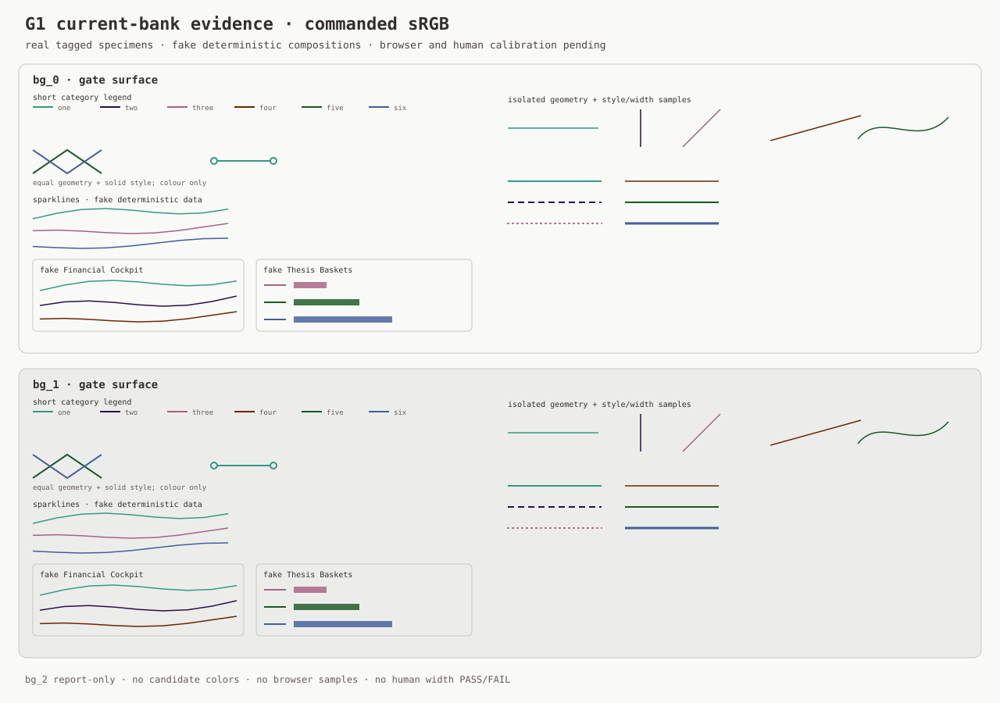
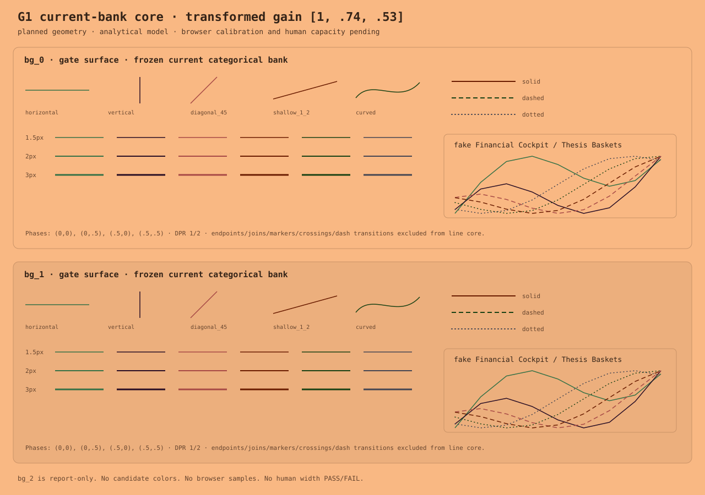

Phase 2A fixes geometry and appearance-model assumptions. These SVGs are deterministic structural review aids, not browser-raster evidence. There are no candidate colours and no claimed human width capacity.

